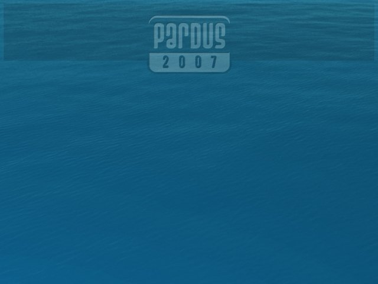

Pardus 2007 Ekran Görüntüleri: Kurulum
| Bu ekranı görüyorsanız demektir ki, YALI çalışmaya başladı, kısa süre sonra kurulum konusunda tercihlerinizi sormaya başlayacak... | ||||
|  | ||||
| Bu ekranı görüyorsanız demektir ki, YALI çalışmaya başladı, kısa süre sonra kurulum konusunda tercihlerinizi sormaya başlayacak... | ||||

Bu web sitesinde bulunan bilgi ve belgelerin, kaynak gösterilmek koşulu ile kullanılması serbesttir.
Pardus markası ve logotipi TÜBİTAK'ın tescilli markasıdır. Kullanım koşulları için Yasal Uyarı bölümünü inceleyiniz.
Pardus hakkında merak ettikleriniz için lütfen yardım sayfasına başvurun.
TÜBİTAK - UEKAE, PK.74 41470, Gebze / Kocaeli.